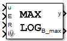

Inputs:
u: numeric
E: logic
R: logic
IV: numeric
Outputs:
y: numeric
B_max: logic
States:
x: numeric
Init-Code:
x = 0.0;
Run-Code:
B_max = 0;
if (R) {
x = IV;
}
else if (E) {
if (u > x) {
x = u;
B_max = 1;
}
}
y = x;